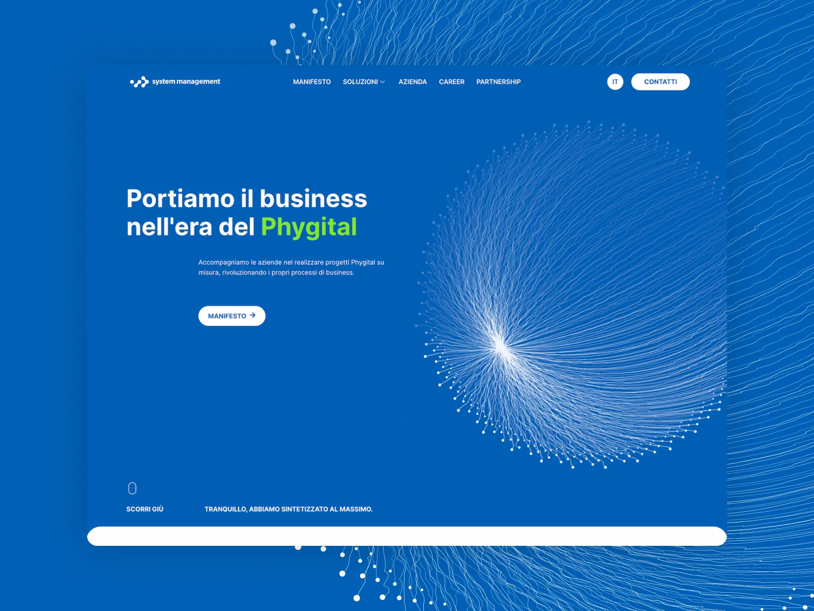
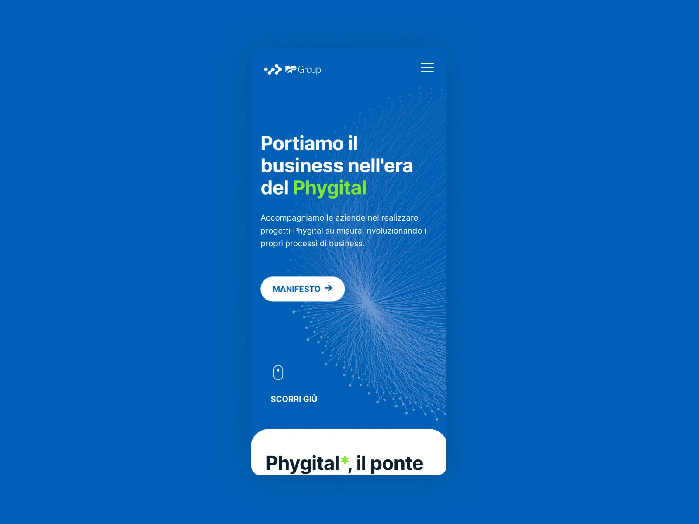
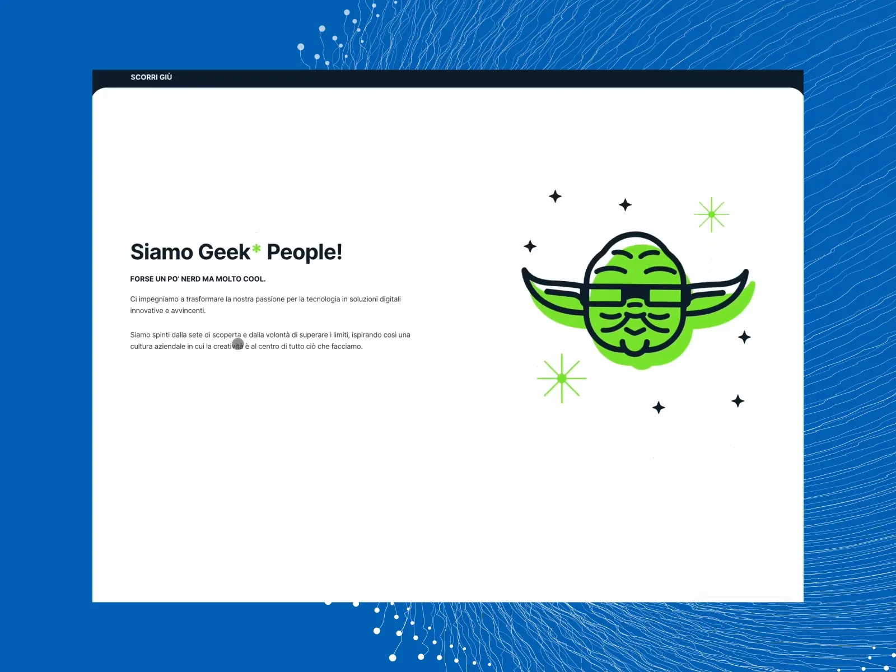

Tutti i lavori
System Management
Il sito istituzionale di un gruppo IT che porta le aziende nel phygital.
- Cliente
- System Management
- Anno
- 2024
- Ruolo
- UI/UX design e sviluppo WordPress
- Tipo
- Sito web
- Stato
- Online

Cosa ho fatto
Ho progettato e sviluppato il sito di System Management con WordPress ed Elementor: architettura dei contenuti, navigazione, sistema visivo e le animazioni che accompagnano la lettura. L'obiettivo era far capire in pochi secondi cosa fa il gruppo e portare chi visita alle soluzioni giuste.
Il risultato
Il sito è stato nominato su Awwwards e CSS Winner.

